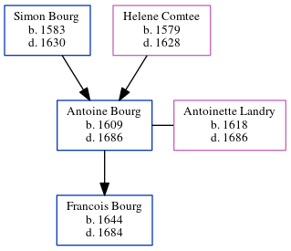

Antoine Bourg 1609 - 1686
[ Home ] | [ Calendar ] | [ Surnames Index ] | [ Census Index ] | [ Family History ]The child of Simon Bourg and Helene Comtee, Antoine Bourg, the 10 times great-grandfather of Michele Copp (née Phillips), was born in Loudun, Vienne, Poitou-Charentes, France in 16091 and married Antoinette Landry (with whom he had 1 child, Francois) in Ns in 16361.
He died in 1686 in Port Royal, Acadia, Nova Scotia, Canada.
Parents
- Simon was born in 1583
- Helene was born in 1579
Children
- Francois was born in 1644
Citations
- U.S. and International Marriage Records, 1560-1900 Online publication - Provo, UT, USA: The Generations Network, Inc., 2004.Original data - This unique collection of records was extracted from a variety of sources including family group sheets and electronic databases. Originally, the information was deriv
Family Tree
Generated by ged2site. Last updated on Jun 11, 2024